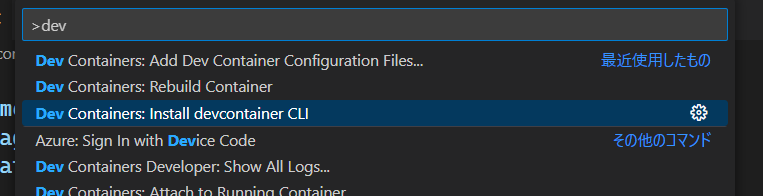
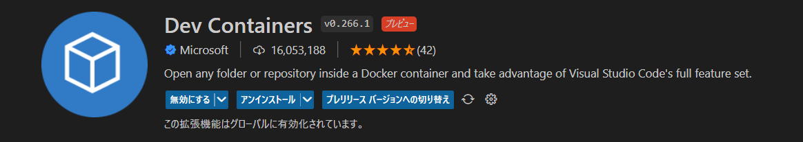
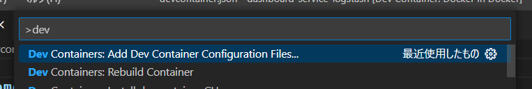
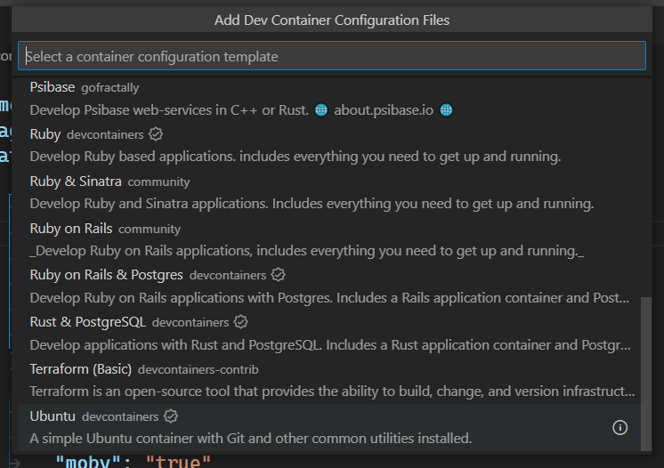
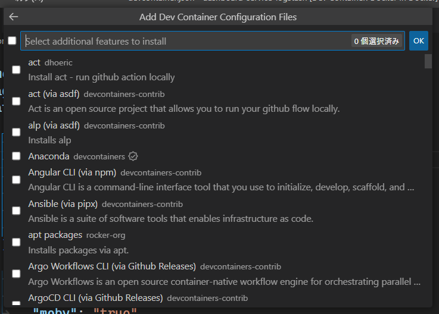
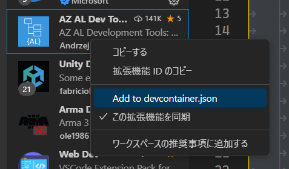
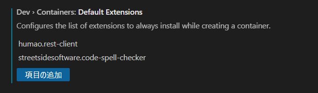

【vscode】devcontainer最高やぞ、という話
目次
なんぞ？
Microsoft製のOSSエディタであるvscodeに追加された便利機能について。
端的に言うと、コンテナ環境に開発環境を構築し、直接vscodeで開くことで開発専用のsandbox内で開発ができるという代物。
決まり事である、 .devcontainer というフォルダや json の定義に開発環境の状態を記述することで、どの端末でも同一の環境をコンテナ上に作成し開発を行うことができる。
各開発者の環境固有の設定などを排除することで環境差異を極力減らす事を目的としている。
こっからポエム
各個人の開発環境に対してこだわりを持っていくことはどの開発者でもわかると思う。しかし、開発環境の多機能化が進んでしまったことで開発用IDEの設定というものはかなり煩雑になってきている。いろいろな端末で自身のIDEの設定を同期させる拡張機能などは存在するもの、用途によって必要となる拡張機能は様々となる。必要な時に必要な拡張機能やツールを使うことでシンプルに環境を保つことは困難になる一方で、これを解決するため、各リポジトリ事に開発環境を持つ思想が生まれるのは必然ではないか。もはや、自身の環境は常に空っぽで、リポジトリ事に開発環境・ツールを整備すればすべてがシンプルになるのではないか？！と思った次第で、とても感銘を受けているからこれを書き始めた（オタク特有の早口）。
何がいいねん
上で書いてしまっているが、開発者が持つ個人端末固有の設定に依存せず、常に同一の環境で開発を行事ができるため、ハマりずらくなる。
また、クラウド上に開発環境を作成し、ブラウザで開発を行うスタイルの開発環境では、クラウドに作成する開発環境についても同様の設定で動作させることができる（と思う。試してない）。
使い方
以下のようにワークスペース中に devcontainer.json を用意する。
/root/
|-- .devcontainer/
| `-- devcontainer.json
|-- src
| |-- main
| :
:
ルートまたは、 .devcontainer フォルダ配下に用意することで、vscodeを開いた際に通知にdevcontaerで開きなおすかどうかが聞かれる。
または、このルートフォルダで、 devcontainer open . とコマンドを打つことで直接vscodeで開くことができる。
この devcontainer コマンドは、vscode上のコマンドでインストールすることが可能。

これらは、拡張機能のDev Containersを入れることで有効になる。

ベースイメージ
拡張機能が入っていれば、vscode上で devcontainer.json を生成することも可能。
そちらから作成すれば、ベースイメージは選択式で選ぶこともできる。


このベースイメージは、多種多様のものがあり、シンプルな Ubuntu や、 Alpine から、RubyやJavaなど開発対象の言語に特化したものが存在する。
また、docker-composeファイルにも対応しており、ベースイメージ＋composeで周辺ミドルウェアの立ち上げまで行うことができる。
（もちろんcomposeで立ち上げるため同一ネットワークに所属させることも可能であるため、ホスト名でアクセスしやすくなる）
featureについて
ベースイメージを選択した後に聞かれるのがfeatureになる。
このfeatureは、ベースイメージの中にインストールするコマンドなどを管理するもの。
Gitコマンドやjq、SDKMANやAnacondaなど開発に利用するコマンド類を最初からセットアップされた状態で使える。

これらを選択すると生成される devcontainer.json では、どのベースイメージでfeatureを利用するかを定義することが可能となり、別のPCで同一の開発環境を構築することが可能となる。
{
"name": "Docker in Docker",
"image": "mcr.microsoft.com/devcontainers/base:buster",
"features": {
"ghcr.io/devcontainers/features/common-utils:1": {
"installZsh": "false",
"upgradePackages": "true",
"uid": "1000",
"gid": "1000",
"installOhMyZsh": "true",
"nonFreePackages": "true"
},
"ghcr.io/devcontainers/features/docker-from-docker:1": {
"version": "latest",
"enableNonRootDocker": "true",
"moby": "true"
},
"ghcr.io/devcontainers/features/docker-in-docker:1": {},
"ghcr.io/devcontainers/features/git:1": {},
"ghcr.io/devcontainers/features/java:1": {},
"ghcr.io/eitsupi/devcontainer-features/jq-likes:0": {},
"ghcr.io/devcontainers/features/terraform:1": {},
"ghcr.io/meaningful-ooo/devcontainer-features/homebrew:2": {},
"ghcr.io/shibadog/devcontainer-feature/graphviz:latest": {}
},
:
:
}
拡張機能も宣言しよう
devcontainerで開いたvscode上では拡張機能はホスト側から引き継がれたりはしない。
そのため、それぞれインストールの必要があるが、これを devcontainer.json に宣言することができる。
（つまり、最初からインストールされた状態で起動することもできる）
これは、 devcontainer.json を直接編集して追加することもできるが、 devcontainer で起動したvscode上から拡張機能をインストールするタイミングで追加することも可能となっている。

また、常に入れておきたい拡張機能は、 Dev Containers 拡張機能の設定で定義することができる。

事前処理を記述する
だいたいfeatureで必要な事前処理は行うことができるようになっているが、あまり一般的ではない、プロジェクト固有の前処理などがあった場合は、 postCreateCommand で事前処理を行うことが可能である。
:
:
// Use 'postCreateCommand' to run commands after the container is created.
"postCreateCommand": "docker --version",
:
:
同じく、 devcontainer.json の中に、 postCreateCommand を用意しておくことで、任意のコマンドを実行することが可能となる。
ここで、事前処理などを行うことが可能となる。
もちろん、コマンドのみならずシェルスクリプトなど実行ができるので .devcontaier フォルダに格納して管理することも可能である。
オリジナルfeatureの作成
実はここで出てくる feature というものは簡単に自作することができる。
これが実は真価を発揮する場面であり、今回最大に感動している点。
こちらにテンプレートリポジトリが用意されており、これをもとに作成したリポジトリでオリジナルfeatureを作ることができる。
また、nodeで開発された devcontaer-cli を使うことで、簡単にテストを記述することもでき、このテンプレートリポジトリには devcontainer-cli を用いたテストや Github Package を用いたパッケージ化の Github Action が含まれている。
これを、 devcontainer.json の feature に追加することですぐに利用することができる。
以下で簡単に自作した feature を追加してみる。
テンプレートからの新規リポジトリ
featureを作るにあたって、公式からテンプレートリポジトリが提供されている。
GitHub - devcontainers/feature-starter: A bootstrap repo for self-authoring Dev Container Features
これには、Github Actionsによるビルドとリリースのjobが定義されているため、定義追加後にGithub Actionsをそのまま実行することでfeature自体を利用することが可能となっている。
実際に作成したリポジトリは以下の通り。
GitHub - shibadog/devcontainer-feature
開発環境構築
テンプレートリポジトリから作成した場合、すでに devcontainer が用意されているため、vscodeで開くと devcontainer で開くことをを促される。
これにより、devcontainer-cli が利用でき、dockerが利用できるコンテナで開発が行える。
テストを試す
基本的に devcontaer-cli を利用することでテストなどが簡単に行える。